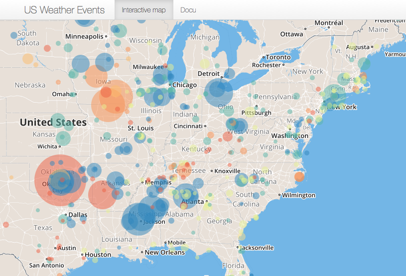

Extrem weather-events such as Tornados and Floods can cause human lives. With the climate change, the probability of and therefore the danger of extrem weather events increases.
For the US, the Shiny-App on "Exploring Weather Events" allows to visuallize number, impact and location of recorded events.
